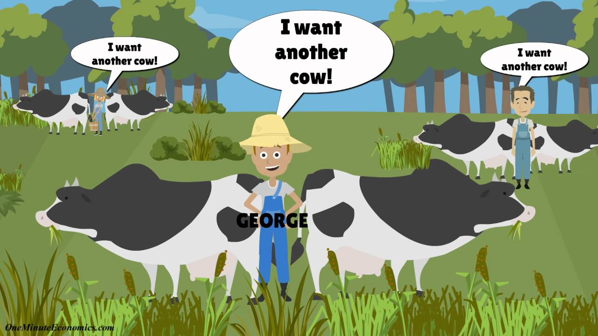
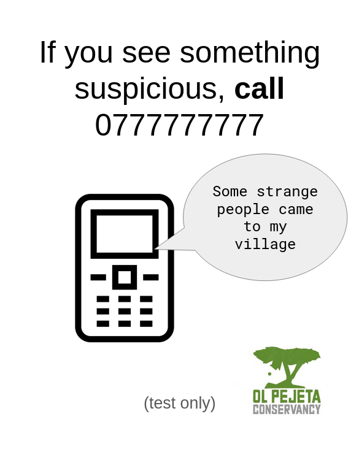
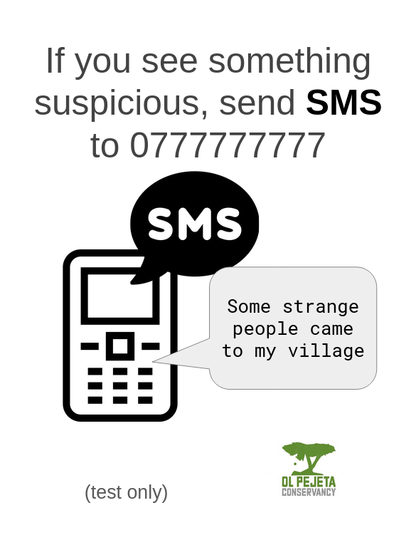
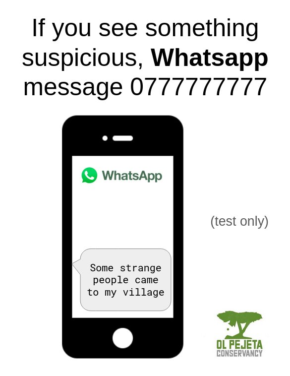
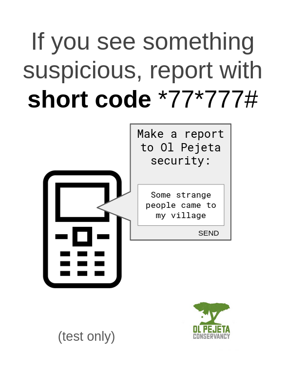
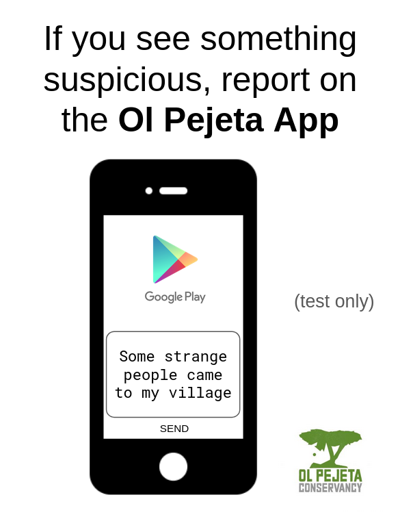
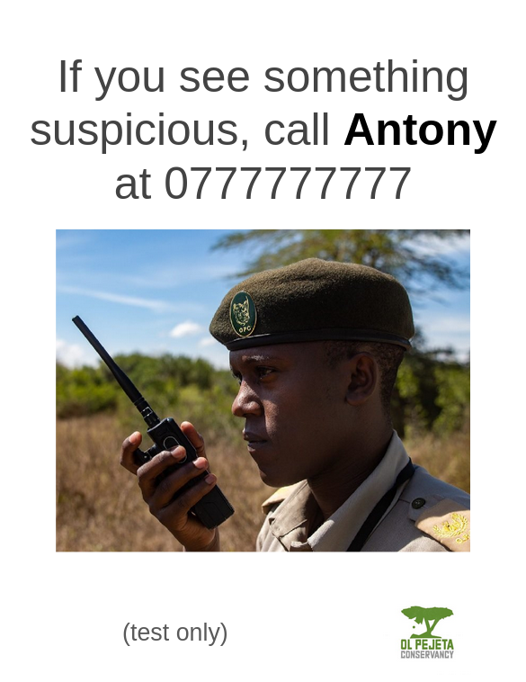

Communication Technology and Environmental Institutions
Matt Ziegler — General Exam, May 2022Environmental Problems are Social



Thesis structure
| Related Work | In progress | |
| Design probes | Rural wildlife conservancy outreach | Completed |
| Anti-poaching hotline | In progress | |
| Public wildlife-tracking maps | Completed | |
| Cross-sectional interview study | In progress | |
Thesis contributions
- Technology design space
- Effects of communication technology on environmental institutions
Road map
| Related work | In progress | |
| Design probes | Rural wildlife conservancy outreach | Completed |
| Anti-poaching hotline | In progress | |
| Public wildlife-tracking maps | Completed | |
| Cross-sectional interview study | In progress | |
Environmental CS Genres
Research & monitoring
- Sensing
- Modeling
- Decision support
- Biodiversity informatics
- Anti-poaching
Energy
- Efficient computing
- Renewables
- Business / institutional efficiency
Agriculture
- Extension / education
- Sensing applications
- Permaculture planning
Urbanism
- Smart cities / buildings
- Pollution monitoring
- Transit
- Urban planning
Individual behavior change
- Ambient awareness
- Self-tracking
Governance / Collective change
- E-governance
- Community sensing
- Participatory mapping
- Social media
ICTD
Theory • Methodology • Technology Affordances
-
Semi-automated SMS Nurse Hotline
Perrier et. al. 2015
-
User-moderated interactive voice forums
Vashistha et. al. 2015
-
Participatory Video for Agriculture Extension
Gandhi et. al. 2015
-
Semi-automated SMS Nurse Hotline
Perrier et. al. 2015 - User-moderated interactive voice forums Vashistha et. al. 2015
-
Participatory Video for Agriculture Extension
Gandhi et. al. 2015
Road map
| Related work | In progress | |
| Design probes | Rural wildlife conservancy outreach | Completed |
| Anti-poaching hotline | In progress | |
| Public wildlife-tracking maps | Completed | |
| Cross-sectional interview study | In progress | |
Design probe 1:
Wildlife Conservancy Community Outreach
★ Best paper at COMPASS 2020 ★
Can basic phone services...
- ...improve service delivery?
- ...build relationships?
- Feedback
- Credible information
- Improving reach
- Accountability
Two-way SMS hotline
Example messagesDear ol pejeta consaverncy am a community member but ai whant inform you if it is an any varncy just inform ifen a fance ripear and security patrol thanks
10 Erephants ware patroling kijabe thd whole night pls.
Goodafternoon am a resindent of [redacted] and am borthed by a sheep diseases that afect lamps coursing small woulds aroud mouth.
My Name is [redacted] am farming nearest to u here on the river whow can u helpers from these monkey theru inaharimbu everything in the shamba
Am a guardian from [redacted] and my sister achieved 332 marks how can I get a scholarship form?
USSD Pilot


Takeaways
- Relationships and diplomacy are crucial
- Proof of concept
- Challenges
- Potential for miscommunication
- Accessibility
- Security
- Institutional capacity
Road map
| Related work | In progress | |
| Design probes | Rural wildlife conservancy outreach | Completed |
| Anti-poaching hotline | In progress | |
| Public wildlife-tracking maps | Completed | |
| Cross-sectional interview study | In progress | |
Design probe 2: Anti-Poaching Hotline
    
Findings / Paradoxes
- Publicity vs. discretion and separation
- Anonymity vs. misdirection
- Direct contact vs. resource constraints
- Limited information about ivory poaching vs. bushmeat and charcoal
Road map
| Related work | In progress | |
| Design probes | Rural wildlife conservancy outreach | Completed |
| Anti-poaching hotline | In progress | |
| Public wildlife-tracking maps | Completed | |
| Cross-sectional interview study | In progress | |
Design probe 3: Wildlife tracking maps and environmental communication
★ Honorable mention at COMPASS 2021 ★
Animal-tracking maps
© OCEARCH
© OCEARCH
© Wild Capuchin Foundation
© MOTUS
© WWF
© Polar Bears International
Environmental Comms. Best Practices
- Emotions: cultivate hope, avoid anxiety
- Conversations towards collective action
- Continuous awareness
- Relationships with audience
- Avoid controversy to broaden participation
- Relatability: tell local stories, focus on people
Findings
User study & conservationist interviews
- Data is not relatable — Integration with other media is key
- Continuously engage dedicated audiences with updates
- Show off organization's work — Inspire optimism
- Attract casual audiences to other communication channels
- Details & recommendations in paper
Road map
| Related work | In progress | |
| Design probes | Rural wildlife conservancy outreach | Completed |
| Anti-poaching hotline | In progress | |
| Public wildlife-tracking maps | Completed | |
| Cross-sectional interview study | In progress | |
Cross-sectional interviews
Methods
- Inclusion criteria:
- Work at an environmental instition
- Interact with communities
- 22 interviews so far: 17 India, 6 Uganda, 2 USA
- 90-minute Zoom interviews, semi-structured
- Interview questions informed by design probes
- Work at an environmental instition
- Interact with communities
Cross-sectional interviews
Preliminary findings
Urban
- social media
- advertising
- group conversations
- multimedia
Rural
- project coordination
- point people
- accountability
- no mass communication over ICT's
Remote
- limited connectivity
- relaying messages
- liasing with government
Cross-sectional interviews
Technology's impact on social factors
- Trust → start relationships in person, keep in touch, credibility, intimidation
- Inclusion → no positive or negative effect; reflected existing inequities
- Formalization → more structured interactions, top-down control, hard to get rich information
Thesis structure
| Related work | In progress | |
| Design probes | Rural wildlife conservancy outreach | Completed |
| Anti-poaching hotline | In progress | |
| Public wildlife-tracking maps | Completed | |
| Cross-sectional interview study | In progress | |